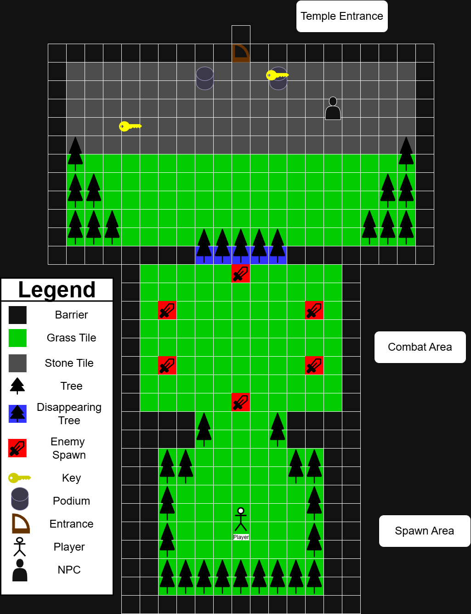
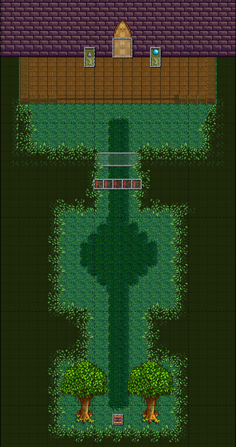
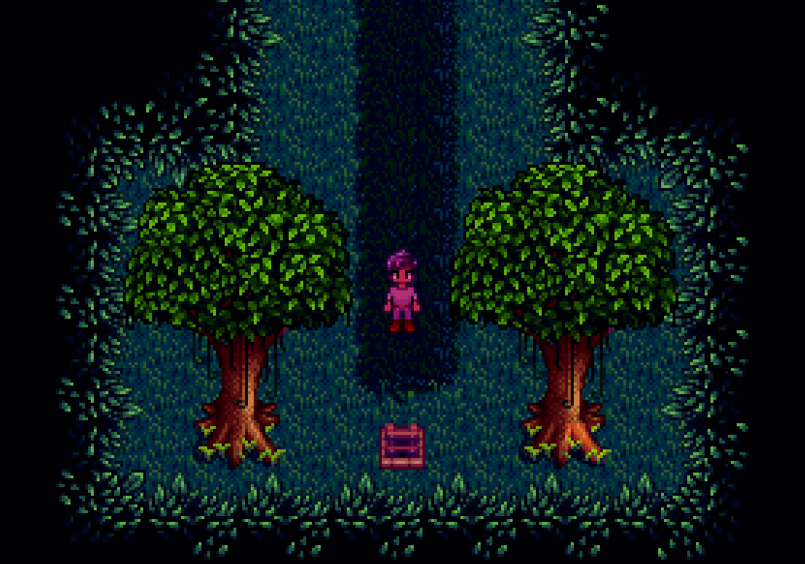
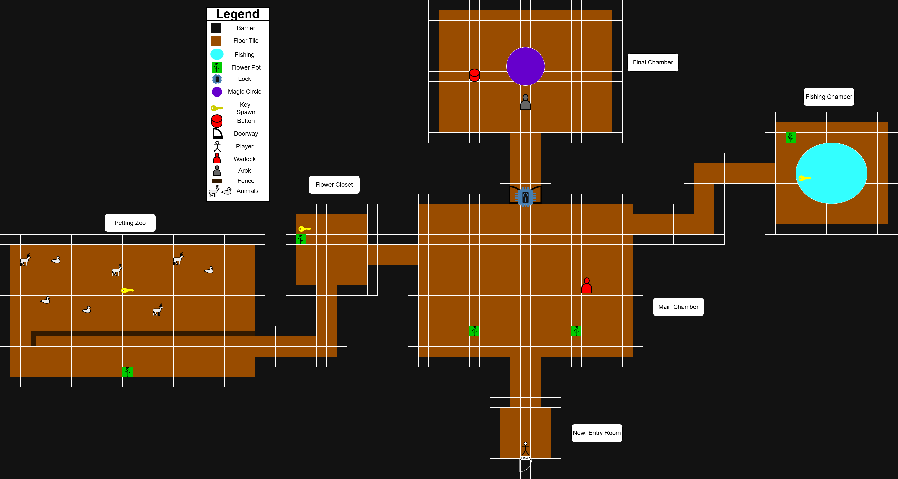
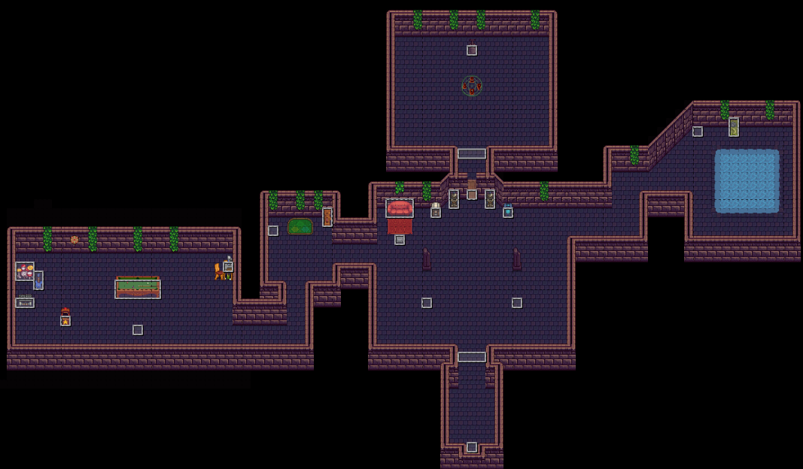
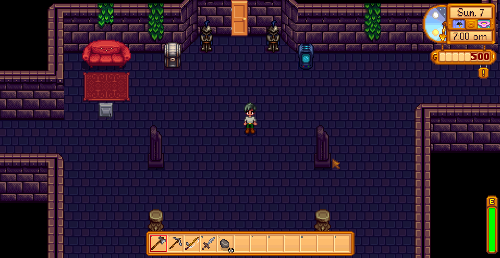
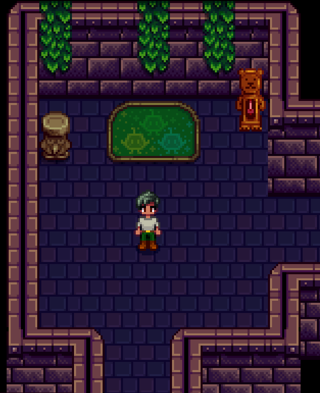
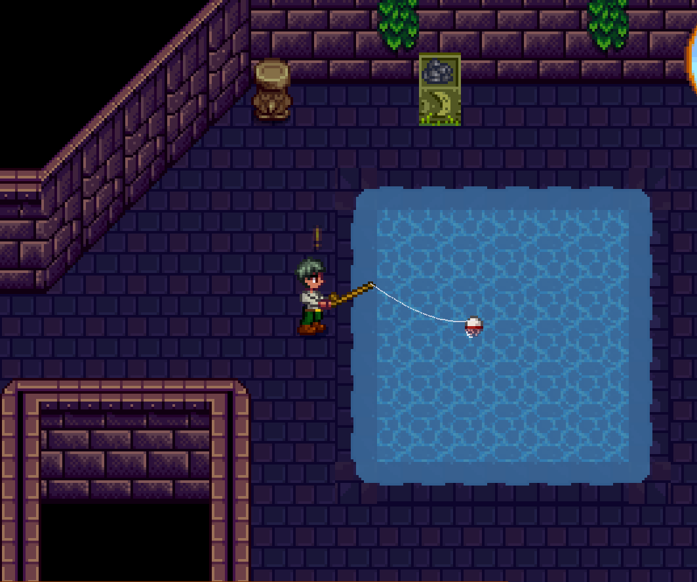
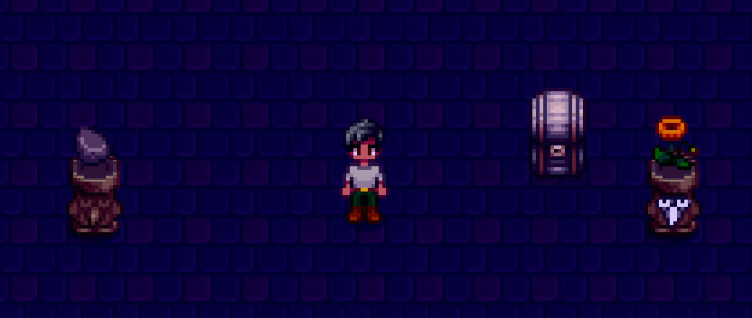

Description
Junimoji is a mod for Stardew Valley created as a group project for a class.
This mod was created with the SMAPI API, Content Patcher framework mod, and Tiled map editor.
The mod starts early in the vanilla game. After the player reaches level 5 in the mines, they receive
a letter urging them to investigate a nearby cave. There, they find a strange arcade machine that sucks them inside.
Once inside, the player has to complete various challenges in order to escape.
The mod features two custom areas, two custom NPCs, two reskinned enemies,
and a piece of equipment that grants a speed boost.
I served as the project's level designer and secondary programmer.
My primary responsibility was building and maintaining the two custom locations with the Tiled map editor.
I primarily used assets from the vanilla game, but also made a custom spritesheet from assets created by
the team's artist.
With the Tiled editor, I was able to add plenty of code functionality, such as functional doors and warps between maps.
For programming, I added a handful of custom items that use vanilla game sprite, a shop to give the player
items they need for the challenges, and implemented two of the challenges.
The first challenge, getting a certain fish, was implemented through the Content Patcher framework mod.
The second, placing flowers as decoration, was implemented with C# code through the SMAPI API by
reusing the Item Pedestals from the vanilla game.

Planning Diagram of the Jungle Area.

Screenshot of the Jungle Map.

Jungle Entrance.

Outside the Temple.

Planning Diagram of the Temple Area.

Screenshot of the Temple Map.

The Temple Main Room.

The Temple Side Room.

The Temple Fishing Pool.

Showcase of the Flower Puzzle.